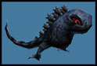
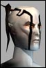

MissMaul
Supa Leet
 | I want to see toilet paper all over the Council of Truth.  |
Centurion3
Supa Leet
 | I expect to see an complete bug fix and balancing of all the classes, as well as removing any need for camping rare items and loot. Then setting the entire planet (cept cities) to 25% gas level and haveing real guild wars going on with tanks and airstrikes and artilery attacks from the notum cannons we pointed to Tir.
or maybe not. |
Zed Dabucho
Soleet
 | i want a pony. hmm wait that is xmas =) |
Leperican
Eleet
 | In zoltan, we have 6 christmases |
Demenzia
Isis In Darkness
| quote:
Originally posted by MissMaul
I want to see toilet paper all over the Council of Truth.
Can I help ya putting it on the building? |
Osols
Leetas
 | Yea hope thay will do something..... |
Orchid
Supa Leet | quote:
Originally posted by Intrepid
I doubt we will see anything last halloween has proven to be a isolated event.
wow, look who woke up on the wrong side of the lag this morning :P |
InfamousDuck
Leetas | Halloween. Yeah previous halloween was pretty crappy. |
Sean-Roach
Soleet
 | Hacked pills of false profession scattered everywhere, which are deleted November 1.
A face slot item that ratches your face selection some random number to the left or right. The change should be in the face item, not a permanent change.
shoulder slot item that randomly changes your visible gender/breed setting.
24 hours with paper OT armor. Looks like OT, wears like OT, protects like paper. Wearable by clan and neutral.
Actually, TPing the CoT building makes a lot of sense...if the clanners are the ones allowed to do it. (After all, since the council just up and dissappeared, we shouldn't be too happy with them.)
The ocassional guard that has a rather...lupine...face.
Mobs that are (a.) somewhat transparent, and (b.) have collission turned off, and (c.) don't even make a pretense of avoiding walls and other obsticles. If they aggro, and could only be fought effectively with nano's, and dimach, that'd be okay, (I'd be running, but it'd still be okay.)
If after dying, you respawned as normal, but next to your body, without any ability to click on anything, UNTIL you zoned, and with collision turned off, and somewhat transparent, that'd be great. (I'd suicide to play around as a ghost.)
A 24 hour cease-fire to enjoy the holiday. You can walk into omni-ent without fear of attack.
A 24 hour scalp hunt to celebrate the holiday. You can't even expect to walk outside of Tir without fear of attack. One or the other.
STORYLINE.
Every merchant mob looking like a notable NPC, or NPC class. (All the clanner merchants "dressed" as Phillip Ross, all the OT merchants "dressed" as Henry Radiman, all the neutral merchants "dressed" as Rhinomen. Named to match.)
New animated chapters.
Failed Experiments everywhere.
And finally, STORYLINE. |
Grimmtooth
Soleet
 | I'd like an Uncle Pumpkinhead head I could keep after killing him. I'd like to be able to wear the head as a helmet too. |
Londino
Supa Leet
| /me hugs his childhood memory
i am gonna soooooo go down & kick nelebs ass on halloween!
how the tides have changed over a year mr...
i think i'd be quite content with some little novelty change to the world, i like the npc idea, but something like the christmas leets would be very cool IMO  |
MissMaul
Supa Leet
| quote:
Originally posted by Sean Roach
Hacked pills of false profession scattered everywhere, which are deleted November 1.
A face slot item that ratches your face selection some random number to the left or right. The change should be in the face item, not a permanent change.
shoulder slot item that randomly changes your visible gender/breed setting.
24 hours with paper OT armor. Looks like OT, wears like OT, protects like paper. Wearable by clan and neutral.
Actually, TPing the CoT building makes a lot of sense...if the clanners are the ones allowed to do it. (After all, since the council just up and dissappeared, we shouldn't be too happy with them.)
The ocassional guard that has a rather...lupine...face.
Mobs that are (a.) somewhat transparent, and (b.) have collission turned off, and (c.) don't even make a pretense of avoiding walls and other obsticles. If they aggro, and could only be fought effectively with nano's, and dimach, that'd be okay, (I'd be running, but it'd still be okay.)
If after dying, you respawned as normal, but next to your body, without any ability to click on anything, UNTIL you zoned, and with collision turned off, and somewhat transparent, that'd be great. (I'd suicide to play around as a ghost.)
A 24 hour cease-fire to enjoy the holiday. You can walk into omni-ent without fear of attack.
A 24 hour scalp hunt to celebrate the holiday. You can't even expect to walk outside of Tir without fear of attack. One or the other.
STORYLINE.
Every merchant mob looking like a notable NPC, or NPC class. (All the clanner merchants "dressed" as Phillip Ross, all the OT merchants "dressed" as Henry Radiman, all the neutral merchants "dressed" as Rhinomen. Named to match.)
New animated chapters.
Failed Experiments everywhere.
And finally, STORYLINE.
Someone please hire this man.  |
Uncle Pumpkinhead
Halloween Visitor | Mwa-ha-ha-ha! |
Unfitrider
Leetas
 | I am on to you...
You know you can't hide! |
AkodoReign
Supa Leet
 | dang now im on the Uncle Pumpkinhead hunt myself ...
Cause you can't hide from the Powers of the Epicine
You're going down Like .... A .... Punk... |
Centurion3
Supa Leet
| quote:
Originally posted by Uncle Pumpkinhead
Mwa-ha-ha-ha!
Any idea how many of you ive roasted into pie? |
Kzak
Supa Leet
 | According to Kenlon in a post on the World of Rubi-Ka board, titled 'Ow!', something or someone dropped 3k of AoE damage on a group of people in Omni-Ent.
Let the games begin.
Now, where was my pumpkin pie again? |
Warlock
Supa Leet
 | quote:
Originally posted by Uncle Pumpkinhead
Mwa-ha-ha-ha!
Even as narked as I am at the moment I do have to say that THAT was cool! |
Brandon
Phear Leet
| Bring back the pumkin MOBs! |


 Last Thread Next Thread
Last Thread Next Thread 
 September 30th, 2002 01:13
September 30th, 2002 01:13